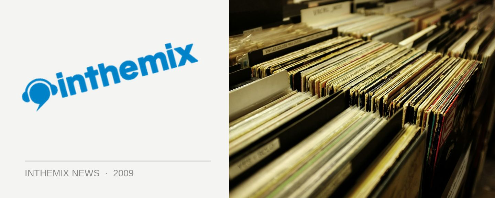

SOS collective return in August
Stop the presses… SOS AKA the ‘Sex on Substance’ collective will be making a whirlwind return to Australian clubs in early August, with two exclusive dates in Sydney and Melbourne. The tour will see the trio flying in and then flying out again, quicker than you can blink basically!
Comprised of Desyn Masiello, Demi and Omid 16B, each of who boast an impressive career as a DJ/producer in their own right, together as the SOS collective they’re something else indeed. Using their six hands to work all manner of laptops, CDJs, keyboards and other technological trickery, their contribution to the Balance series last year still counts as one of 2008’s best dance releases.
Now we’ll get a chance to see them at work again…
SOS tour dates:
Fri August 7th – Brown Alley, Melbourne
Sat August 8th – Club Club, Chinese Laundry, Sydney